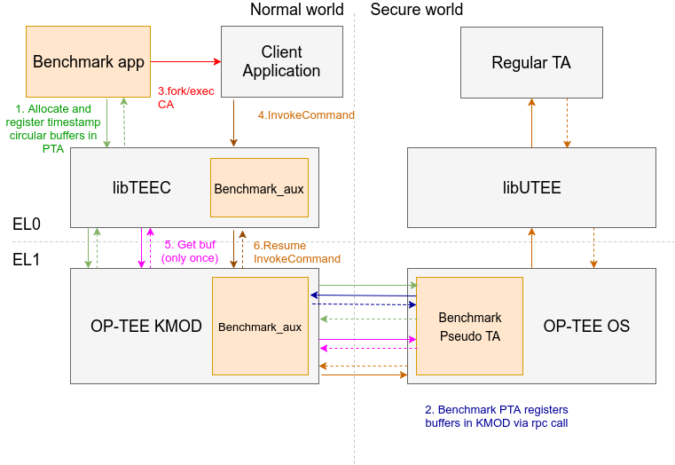
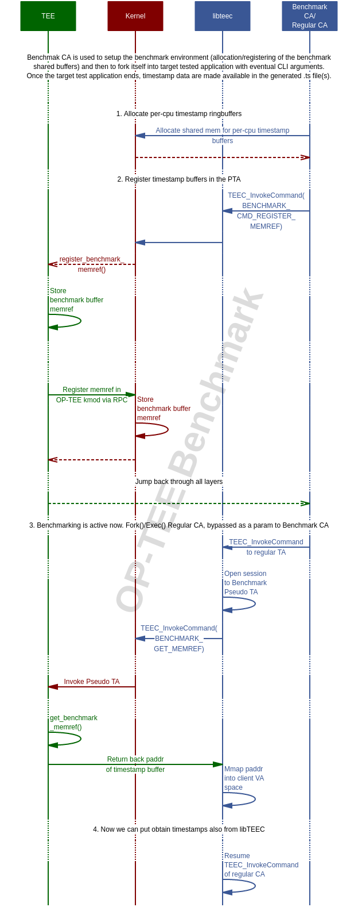

Note
The feature described in this section depends on a Linux kernel patch that is not available upstream and has been maintained in the linaro-swg kernel repository up to OP-TEE version 3.15.0. The latest kernel source with this patch can be found in the optee-3.15.0 branch based on Linux 5.14.
The benchmark framework should still work as described here with OP-TEE 3.16.0 or later provided that either: (a) a Linux kernel built from branch optee-3.15.0 is used, or (b) the benchmark kernel patch is forward ported.
If the kernel patch is missing the following errors are printed:
$ benchmark optee_example_hello_world
[Benchmark] INFO: 1. Opening Benchmark Static TA...
[Benchmark] INFO: 2. Allocating per-core buffers, cores detected = 2
[Benchmark] ERROR: TEEC_InvokeCommand: 0xffff000c
E/TC:? 0 alloc_benchmark_buffer:72 Benchmark: can't create mobj for timestamp buffer
Benchmark framework
Due to its nature, OP-TEE is being a solution spanning over several architectural layers, where each layer includes its own complex parts. For further optimizations of performance, there is a need of tool which will provide detailed and precise profiling information for each layer.
It is necessary to receive latency values for:
The roundtrip time for going from a client application in normal world, down to a Trusted Application and back again.
Detailed information for amount of time taken to go through each layer:
libTEEC -> Linux OP-TEE kernel driver
Linux OP-TEE kernel driver -> OP-TEE OS Core
OP-TEE OS Core -> TA entry point (not supported yet)
The same way back
Implementation details
Design overview
Benchmark framework consists of such components:
Benchmark Client Application (CA): a dedicated client application, which is responsible for allocating timestamp circular buffers, registering these buffers in the Benchmark PTA and consuming all timestamp data generated by all OP-TEE layers. Finally, it puts timestamp data into appropriate file with
.tsextension. Additional build details can be found at optee_benchmark.Benchmark Pseudo Trusted Application (PTA): which owns all per-cpu circular non-secure buffers from a shared memory. Benchmark PTA must be invoked (by a CA) to register the timestamp circular buffers. In turn, the Benchmark PTA invokes the OP-TEE Linux driver (through some RPC mean) to register this circular buffers in the Linux kernel layer.
libTEEC and Linux kernel OP-TEE driver include functionality for handling timestamp buffer registration requests from the Benchmark PTA.
When the benchmark is enabled, all OP-TEE layers (libTEEC, Linux kernel OP-TEE driver, OP-TEE OS core) do fill the registered timestamp circular buffer with timestamp data for all invocation requests on condition that the circular buffer is allocated/registered.

Timestamp source
Arm Performance Monitor Units are used as the main source of timestamp values. The reason why this technology was chosen is that it is supported on all Armv7-A/Armv8-A cores. Besides it can provide precise pre-cpu cycle counter values, it is possible to enable EL0 access to all events, so usermode applications can directly read cpu counter values from coprocessor registers, achieving minimal latency by avoiding additional syscalls to EL1 core.
Besides CPU cycle counter values, timestamp by itself contains also information about:
Executing CPU core index
OP-TEE layer id, where this timestamp was obtained from
Program counter value when timestamp was logged, which can be used for getting a symbol name (a filename and line number)
Call sequence diagram

Adding custom timestamps
Currently, timestamping is done only for InvokeCommand calls, but it’s also
possible to choose custom places in the supported OP-TEE layers. To add
timestamp storing command to custom c source file:
Include appropriate header:
OP-TEE OS Core:
bench.hLinux kernel OP-TEE module:
optee_bench.hlibTEEC:
teec_benchmark.hInvoke
bm_timestamp()(for linux kmod useoptee_bm_timestamp()) in the function, where you want to put timestamp from.
Build and run benchmark
Please see the instructions available at optee_benchmark.
Limitations and further steps
Implementation of application which will analyze timestamp data and provide statistics for different types of calls providing avg/min/max values (both CPU cycles and time values).
Add support for all platforms, where OP-TEE is supported.
Adding support of S-EL0 timestamping.
Attaching additional payload information to each timestamp, for example, session.
Timestamping within interrupt context in the OP-TEE OS Core.